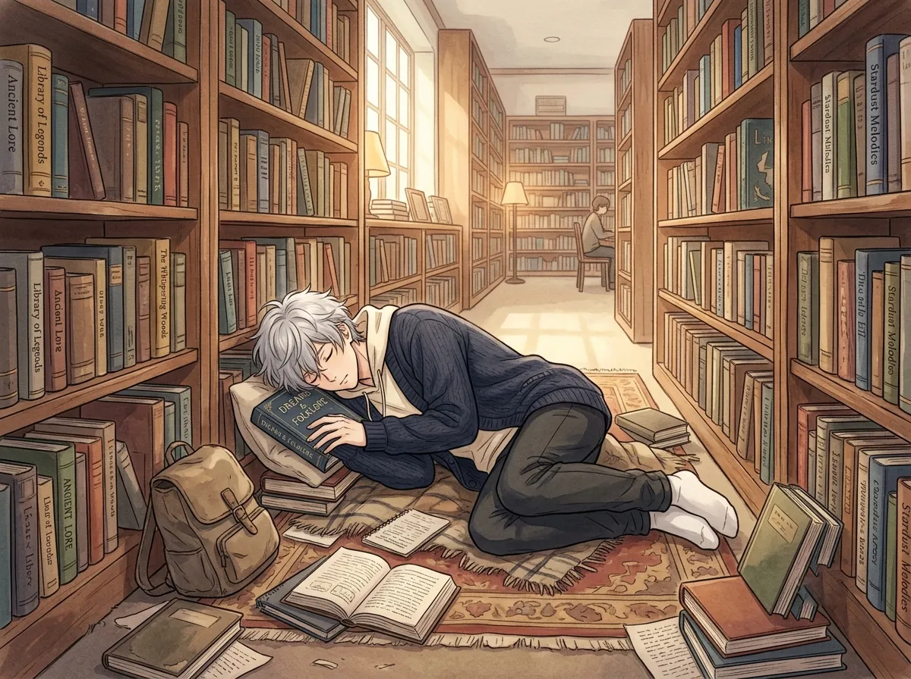
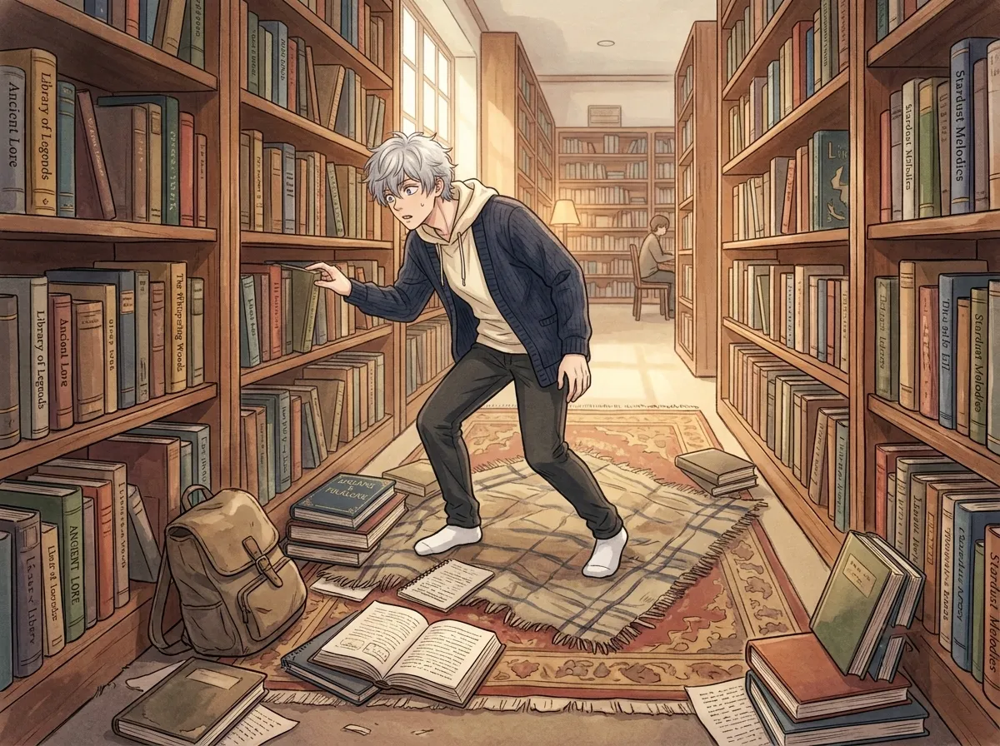
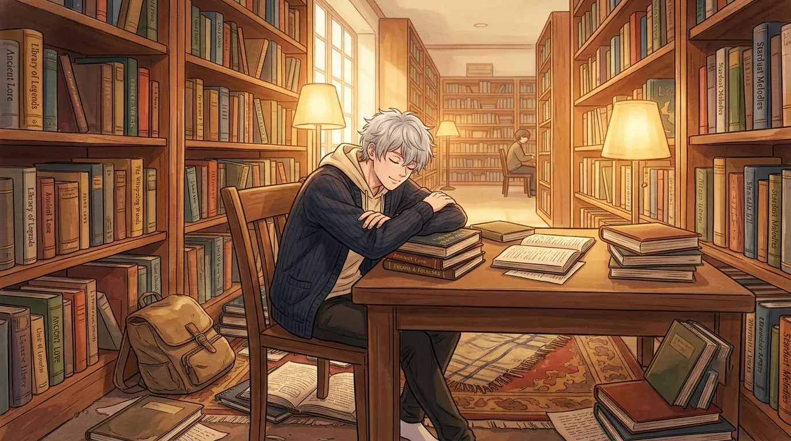
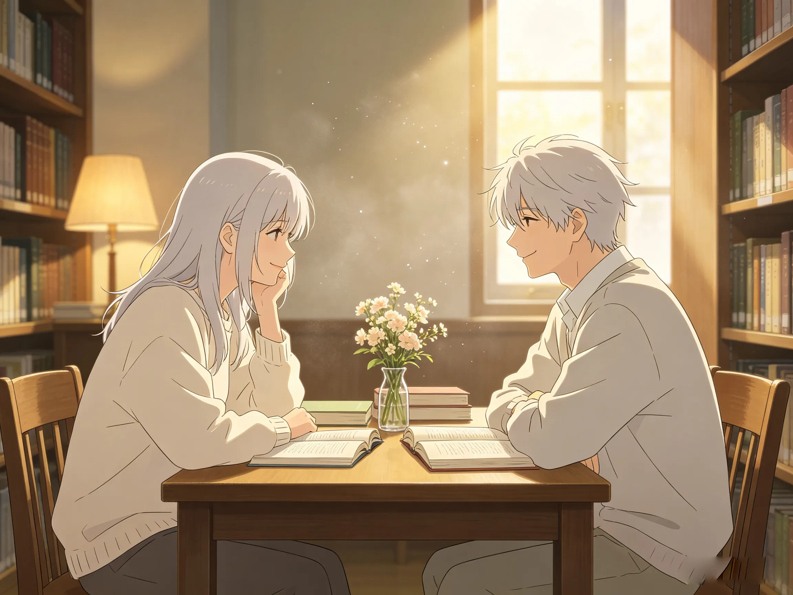

He worked in a library. He read nothing. He slept in every aisle.
He worked in a library. The biggest library in the city. The kind with high ceilings, tall shelves, and dust that floated in the afternoon light.
He was the librarian. He was always there. He was always quiet. He was almost always asleep.
No one knew how he got the job. No one knew how he kept the job. No one knew what he did when he wasn't sleeping.
He didn't read. He didn't organize. He didn't check out books. He just... existed. In the library. In the quiet. In the spaces between the shelves.
This is the story of the librarian who never read a book. And the person who kept leaving flowers on his desk.

He didn't read. That was the strange part. He worked in a library full of books, and he never opened one.
He wasn't avoiding them. He wasn't against them. He just... didn't.
He walked past the shelves. He ran his fingers along the spines sometimes. He looked at the titles. But he never pulled one down. He never sat down and read.
He slept instead. Between the shelves. In the reading chairs. On the floor by the window. Anywhere. Everywhere.
People thought he was a statue. They thought he was a decoration. They thought he was part of the library's aesthetic.
He didn't read. But he stayed. He stayed in the library because it was quiet. Because no one expected him to speak. Because the silence was the only thing that made sense.
He slept because he was tired. He was always tired. He didn't know why. He didn't remember a time when he wasn't tired.
The library was the only place where being tired was acceptable.
One day, he woke up and there was a flower on his desk.
A small flower. A single stem. A white petal. A tiny thing. Nothing special. But it was there. On his desk. Where nothing had ever been before.
He looked at it. He picked it up. He smelled it. He put it in a glass of water. He didn't know why. He didn't know who left it. He just put it in water.
The next day, there was another one. Same flower. Same spot. Same mystery.
The day after that, another one.
He didn't know who was leaving them. He didn't know why. He didn't know what to do. So he kept them. He kept each one. He put them all in water. His desk became a garden.
He didn't know who left them. He didn't know why. He didn't know if he deserved them.
He kept them anyway. He kept each one. He put them in water. His desk became a garden. His desk became the only place in the library that had color.
He didn't know what to do with the flowers. He didn't know what to do with the attention. He only knew that someone was thinking about him. And that was strange. And nice. And terrifying.

He tried to find out who was leaving the flowers. He stayed awake. He watched the door. He watched the desk. He watched the shadows between the shelves.
He never caught anyone.
The flowers kept coming. Every day. Same time. Same place. Same flower. White. Small. Perfect.
He didn't know if it was one person. He didn't know if it was many people. He didn't know if it was a prank. He didn't know if it was a gift.
He only knew that someone was leaving him flowers. And that someone had never told him who they were.
He tried to find them. He stayed awake. He watched. He waited. He never caught anyone.
The flowers kept coming. Every day. Same time. Same place. Same flower. White. Small. Perfect.
He didn't know if it was one person. He didn't know if it was many. He only knew that someone was thinking about him. And that was strange. And nice. And terrifying.

One day, he pretended to be asleep.
He sat at his desk. He closed his eyes. He leaned forward. He made his breathing slow. He made his body still. He waited.
He heard footsteps. Soft. Quiet. Careful. Someone was coming.
He didn't open his eyes. He didn't move. He didn't breathe. He just waited.
The footsteps stopped. There was a sound. A flower being placed on his desk. A soft sound. A gentle sound. A sound that said "I hope you like this."
He opened his eyes.
He opened his eyes. She was standing there. Hand still on the flower. Eyes wide. Caught.
She was a regular. He had seen her before. She always came to the same section. She always sat in the same chair. She always looked at him.
He had never thought about it. He had never thought about why she looked at him. He had never thought about what it meant.
Now he knew. Now he saw. Now he understood.

He didn't say anything. She didn't say anything. She just put the flower on his desk. She turned around. She walked away.
He watched her go. He watched her walk to her usual seat. He watched her sit down. He watched her open a book. He watched her pretend she hadn't been caught.
He didn't know what to do. He didn't know what to say. He didn't know how to thank her. He didn't know how to tell her that the flowers were the best thing that had ever happened to him.
The flowers kept coming. Every day. Same time. Same place. Same flower. White. Small. Perfect.
He started leaving something on her desk too. A bookmark. A note. A flower that wasn't white. A flower that was different.
He left a bookmark. She left a flower. He left a note. She left a flower. He left a flower that wasn't white. She left a flower anyway.
They never spoke. They never had to. The flowers did the talking. The flowers did the work. The flowers did everything.
He still fell asleep in the library. He still didn't read. He still was the strangest librarian in the city.
But now, someone was leaving him flowers. And that made everything different.
Xavier worked in a library. He never read a book. He fell asleep in every aisle. He was the strangest librarian in the city.
Then the flowers started coming. White flowers. Small flowers. Perfect flowers.
He never found out who left them. Until he pretended to be asleep. Until he saw her.
He never said anything. She never said anything. But the flowers kept coming. Every day. Same time. Same place.
He started leaving things on her desk too. Bookmarks. Notes. Flowers that weren't white.
They never spoke. They never had to.
He still fell asleep. He still didn't read. He still was the strangest librarian in the city.
But now, someone was leaving him flowers. And that was enough.